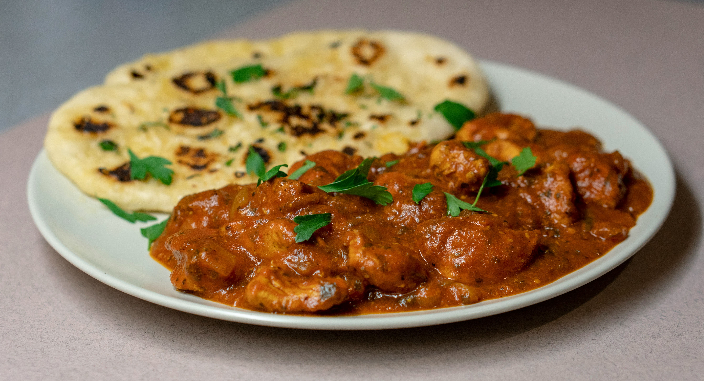

Chicken Garlic

Description
flavorful, savory chicken dish cooked in a rich garlic-infused sauce. It’s aromatic, slightly buttery, and perfect to pair with rice, noodles, or flatbread.
Ingredients
- 500g chicken (boneless or with bone)
- 6–8 garlic cloves (finely chopped)
- 2 tbsp oil or butte
- 1 tbsp soy sauce
- 1 tbsp oyster sauce (optional)
- 1 tsp black pepper
- 1 tsp chili flakes (optional)
- Salt to taste
- 1/2 cup chicken broth or water
- 1 tsp cornstarch (optional, for thickening)
- Spring onions (for garnish)
Steps
- Heat oil or butter in a pan over medium heat.
- Add chopped garlic and sauté until fragrant (don’t burn it).
- Add the chicken pieces and cook until lightly browned.
- Stir in soy sauce, oyster sauce, salt, pepper, and chili flakes.
- Pour in chicken broth/water, cover, and let it cook for 10–15 minutes until chicken is tender.
- Cook for another 2–3 minutes until sauce is glossy.
- Garnish with spring onions and serve hot.
Home